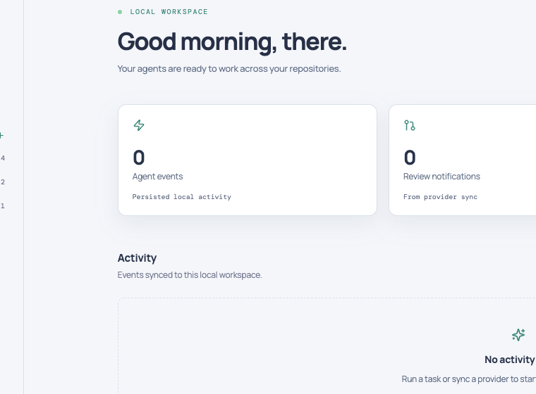
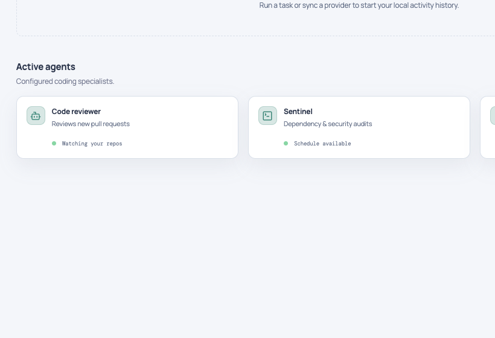
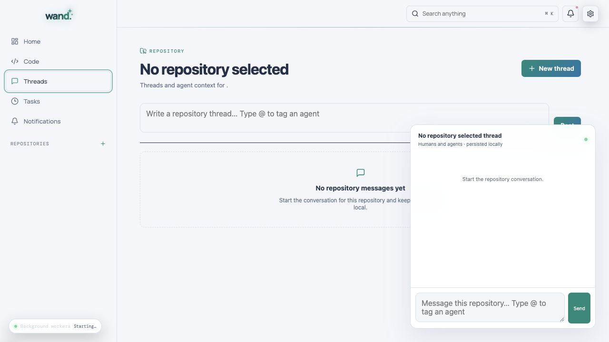
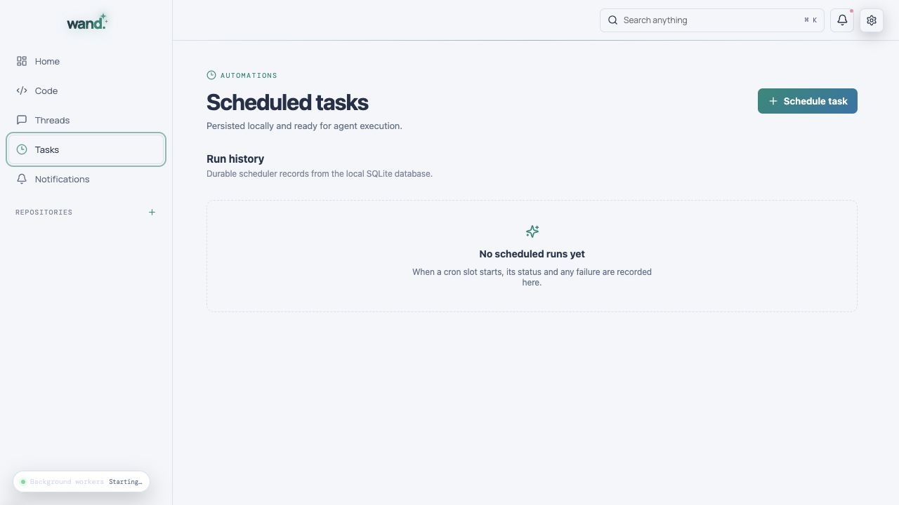
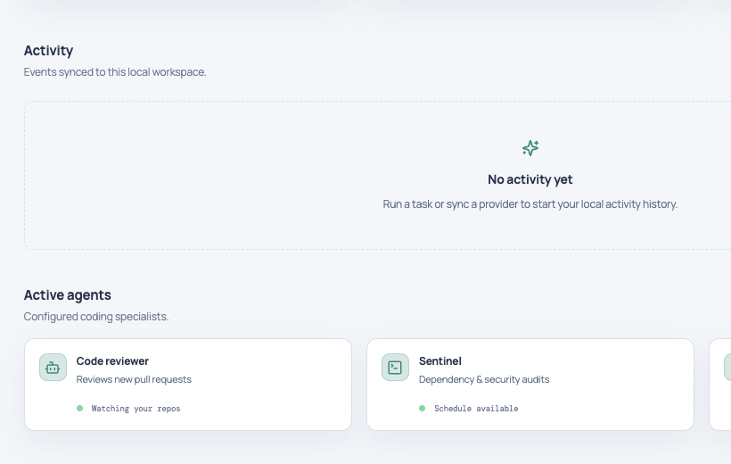

01
Repository context that sticks
Every repository gets its own tasks, threads, agent scope, activity history, and diff surface.

Local-first agent workspace
Wand puts your coding agents, repositories, tasks, reviews, and background verification in one focused desktop workspace.

01 Your code stays local
02 Every handoff stays visible
03 Verification keeps running
One continuous system
Give each specialist a clear role. Wand keeps the work, the handoffs, and the evidence attached to the repository that matters.
Turn the task into an ordered approach with the right repository context.
PLANNERRun your chosen local coding CLI against a tightly scoped workspace.
BUILDERInspect diffs, provider activity, and the reasoning passed between stages.
REVIEWERKeep a final sentinel on the task until the checks and outcome line up.
SENTINEL09:41:02PLANNER Scope confirmed · 4 files
09:41:18BUILDER Implementation in progress
09:42:07REVIEWER Diff received · checking boundaries
09:42:31SENTINEL Running final verification
The workspace
Every repository gets its own tasks, threads, agent scope, activity history, and diff surface.

Configure responsibility, model, CLI runtime, skills, and scope for every specialist.

Scheduled runs, sync events, notifications, and handoffs land in one readable timeline.
Inside Wand
Tasks, activity, provider events, and agent handoffs stay close to the code instead of disappearing across tools.



Built around the boundary
Wand keeps process execution behind the Rust boundary and provider credentials in your operating system’s credential manager—not in browser storage or the project database.
Read the security policyInstallation-scoped secrets stay in Keychain, Credential Manager, or Secret Service.
File operations are resolved against registered local repositories.
Desktop updates are verified before installation.
CLI access is explicit, allowlisted, and attached to a task history.
Start your next run
Choose your platform. Download links resolve to the matching asset from the latest GitHub Release.